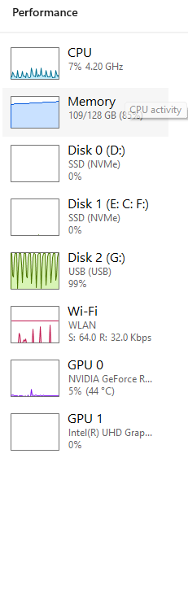

← 部落格 × Harbour
Bomin Kim（特效）


第 7 周
团队成员
2 月 20 日
Bomin Kim（特效）
Caleb Stovall（3D／2D）
Mojie Tang（特效）
Sydney Relkin（合成）
Yiqi Zheng（特效）
SCAD × HARBOR － 第 7 周
大家好，这是我 SCAD × Harbor 部落格的第七周！
导师回馈：
Vi：
-
泡泡要更透明（现在看起来像空气泡泡）：参考 Molly 的灯光
-
镜头 2／3：要能看出一点端倪
-
镜头 1：背景失焦但不要那么暗，火焰要有更多细节
-
镜头 6：灯光太平，盒子上要有更多光线变化
Hailey：
- 镜头 1：调亮，加上暗角
- 镜头 4：接近结尾时放慢
- 镜头 6：烟雾感觉只有一层，很平
Molly：
-
看影片结尾（参考），重新检视你的材质
-
镜头 4：向下移动，让人有被往下拉的感觉
-
镜头 1：稍微拉远一点，留更多空间
镜头 2 和 3 我加入了烟雾和灰尘，但还需要解决锅子和烟雾之间的遮挡问题。以下是最终算图版本：
问题出在把 USD 档存到硬碟时，会因为记忆体不足而当机。为了解决这点，我自订了设定，降低 voxel 大小与密度来优化记忆体用量；也删除了一些属性让档案更轻，并在 Pyro Solver 中勾选 16-bit 选项。
使用 OpenCL 提升模拟速度。
Attribute Delete：
因为我的烟雾模拟只是环境中漂浮的烟，所以可以放心删除与火焰、燃烧和额外计算相关的属性，以优化效能。
之前：
之后：
删除这些多余的属性后，电脑的效能提升了。
之前：
之后：
